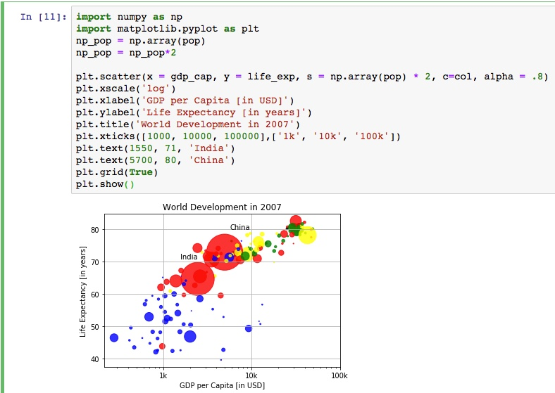
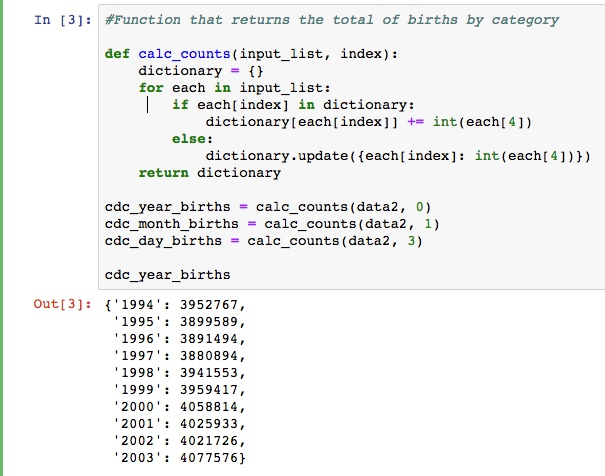
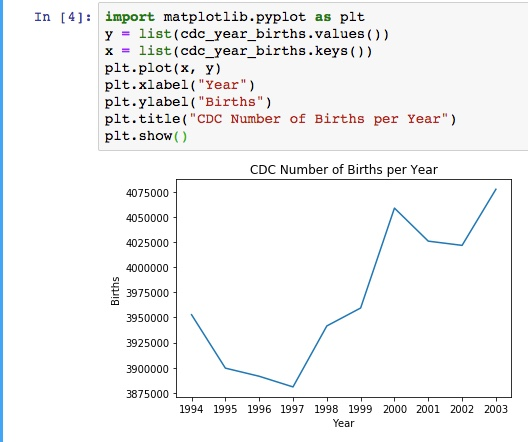
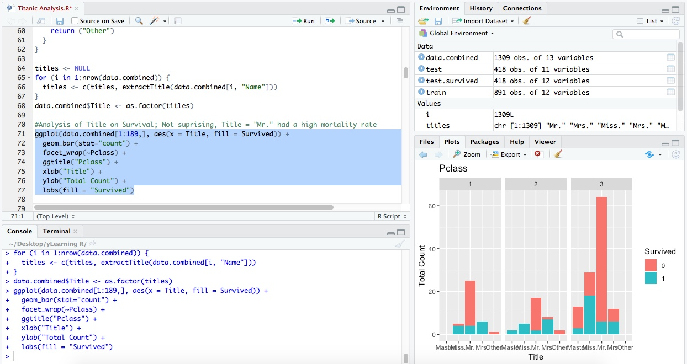
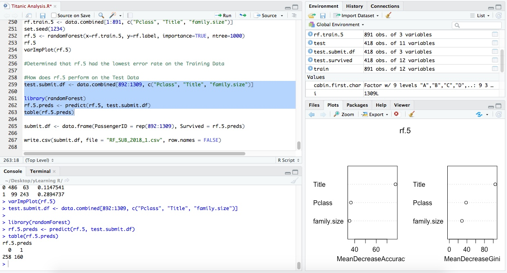
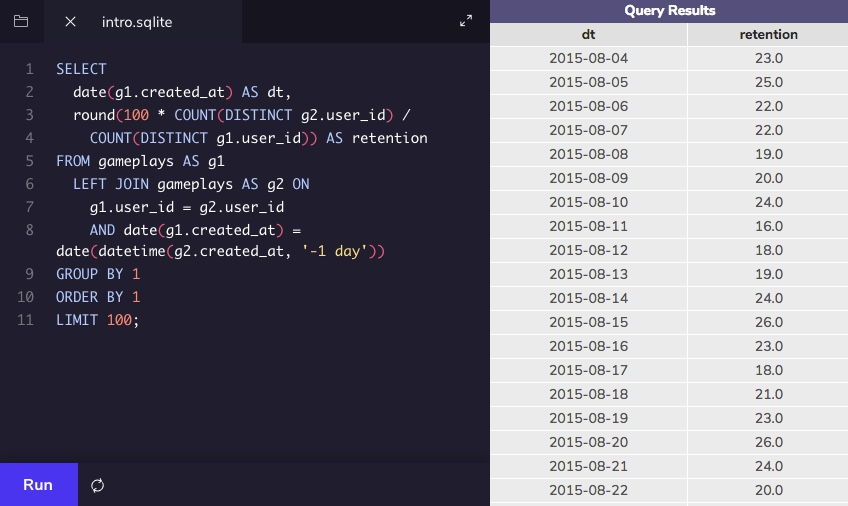
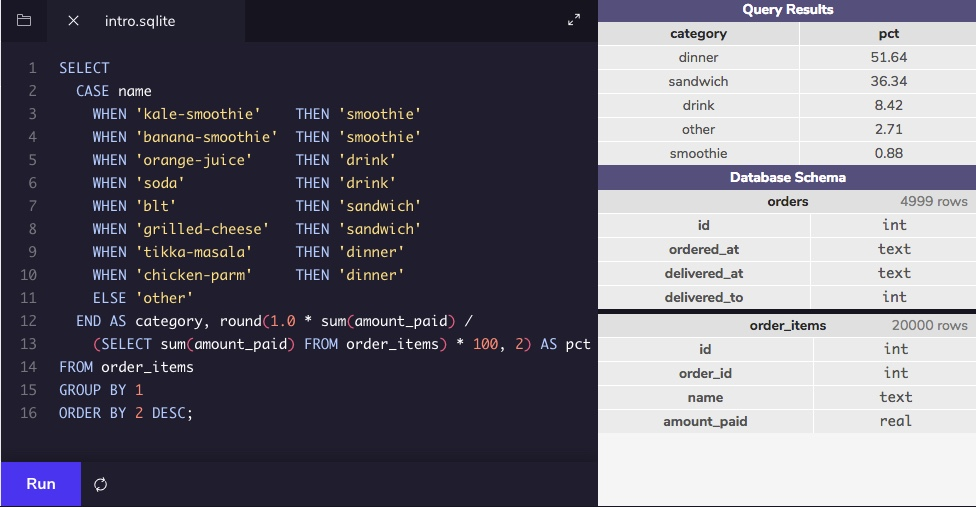
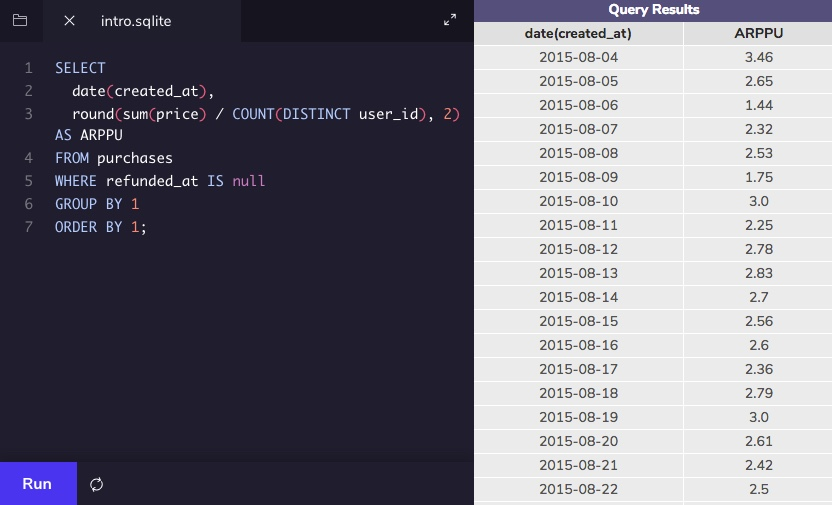

Data Analaysis
At S&P, I recalibrated a financial model that predicted risk in a pool of mortgages. Over the course of a year, I used SQL, Excel, Python, and R to analyze data and present my analysis to senior management. The result: a new model that was rolled out for use by the entire team.
Python
That project introduced me to the power of data. Since then, I've expanded my abilities. I can define functions and classes and I work with NumPy, pandas, and matplotlib to clean and visualize data.

GDP per capita visualization (click to enlarge)

Creating a dictionary...

... And visualizing that dictionary
edX Data Science Certificate
R
In R, I've also learned to apply machine learning algorithms like the Random Forest to predict outcomes.

Visualizing the Titanic dataset in RStudio

Applying a random forest algorithm to predict an individual's chance of survival
SQL
Before any analysis is even run in Python or R, I can pull data from multiple tables and calculate metrics using SQL, making automatic analysis that much easier.

Calculating the daily user retention rate

Calculating category percent revenue

Calculating Average Revenue Per Paying User (ARPPU)